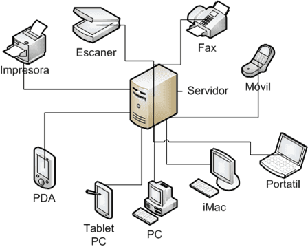

Los servidores son equipos dedicados a proveer servicios a dispositivos o usuarios conectados a una red. Estos pueden ser clasificados en diversos tipos según la función que desempeñan y las características técnicas relevantes. En este ensayo se abordarán los tipos más comunes de servidores y sus aplicaciones en ambientes empresariales y de red.
Uno de los servidores más básicos es el servidor de archivos, que se encarga de almacenar y compartir archivos con otros dispositivos en una red. Este tipo de servidor puede ser utilizado para centralizar el almacenamiento de archivos y hacerlos más accesibles desde los distintos equipos conectados a la red. Además, puede ser configurado para restringir el acceso a ciertos archivos o carpetas a ciertos usuarios o grupos, mejorando la seguridad del sistema. El servidor de archivos puede ser muy útil para empresas grandes que necesitan gestionar grandes cantidades de datos y asegurar la disponibilidad de los mismos.
Otro tipo de servidor común es el servidor web, utilizado para alojar sitios web y aplicaciones web. El servidor web tiene la capacidad de procesar solicitudes HTTP y transmitir el contenido de un sitio web al navegador del usuario. Además, puede soportar lenguajes de programación como PHP, Perl o Python y bases de datos como MySQL o PostgreSQL para permitir la creación de aplicaciones web más complejas. El servidor web es vital para empresas que se dedican a la creación de sitios web o a la venta de productos y servicios online, gracias a que éste mejora la accesibilidad y la disponibilidad de sus sitios.
Los servidores de correo electrónico se encargan de gestionar y enviar mensajes de correo electrónico utilizando el protocolo SMTP (Simple Mail Transfer Protocol). A menudo, los servidores de correo electrónico también ofrecen otros servicios, como el filtrado de spam, el cifrado de mensajes y la gestión de agendas. Este tipo de servidor es muy esencial para empresas grandes que necesitan administrar grandes volúmenes de correos electrónicos.
Otro tipo de servidor es el servidor proxy, que es utilizado para controlar y filtrar el tráfico de internet. Los servidores proxy actúan como intermediarios para los clientes que quieren acceder a recursos en internet, ocultando la dirección del usuario original y permitiendo a los administradores de red filtrar el contenido que se le pasa a los clientes. Esto hace posible que los sitios web bloqueados sean accesibles en algunos casos específicos.
El servidor de almacenamiento en red es otro tipo de servidor que se utiliza para facilitar la administración y el acceso a grandes cantidades de datos en una empresa. Se pueden conectar dispositivos de almacenamiento externos a este servidor y hacerlos accesibles de manera conveniente desde cualquier dispositivo en la red. El servidor de almacenamiento en red también puede ser configurado para automatizar copias de seguridad y recuperación de datos, lo que lo convierte en una herramienta esencial para empresas grandes que necesitan tener una gestión y administración seguras de sus datos.
La mayoría de las empresas utilizan servidores de seguridad para proteger sus datos y recursos de ataques externos y malware. Los tipos de servidores de seguridad más comunes son los servidores anti-spam, anti-virus y los servidores firewall. Los servidores anti-spam se utilizan para filtrar correos electrónicos no solicitados y mantener limpia la bandeja de entrada de los usuarios. Los servidores anti-virus se utilizan para proteger los sistemas de los ataques de malware y virus. Los servidores firewall se utilizan para proteger la red de los ataques externos bloqueando o permitiendo el acceso a ciertos puertos o servicios.
los servidores son una parte esencial de cualquier red empresarial. Los diferentes tipos de servidores hacen posible que las empresas tengan una gestión y administración seguras de sus datos, recursos y servicios. Al elegir el tipo adecuado de servidor para su empresa, es importante tener en cuenta las necesidades específicas de la organización y las características técnicas de cada tipo de servidor. Con un enfoque estratégico y un conocimiento claro de las soluciones disponibles, cualquier empresa puede contar con servidores que mejoren su eficiencia, seguridad y productividad.